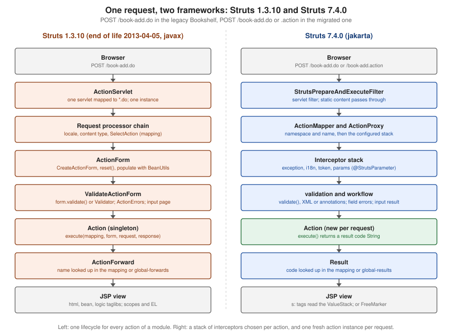

Struts 1 (Classic) & Migration
|
This content was generated with the assistance of AI and should be verified against the official documentation before being relied on in production. |
This page was verified on 2026-10-08 and 2026-10-10. The Struts 1 facts come from the Apache sources of release 1.3.10 (the
last Struts 1 release, December 2008) in the Apache Subversion repository, from the end-of-life announcement and press
release of 2013-04-05 and from the Struts wiki; the Struts 7 facts come from Apache Struts 7.4.0 (released
2026-10-02) running on Apache Tomcat 11.0.26 and Java 21, where every "after" example was built into a WAR, deployed
and requested with curl. The "before" examples are Struts 1 code written for this page: they are small, labelled, and
never run, because Struts 1.3.10 was compiled against the javax.servlet 2.3 API and does not start on a current
container. Struts 1, the framework that taught a generation of Java developers Model 2, has been unmaintained for over
thirteen years, and it is still the framework underneath a surprising number of intranet applications. This page has two
jobs: to let you read a legacy struts-config.xml, ActionForm and html:form without the 2002 book at hand, and to
move such an application to Struts 7.4.0 (or elsewhere) one screen at a time. The running scenario is the Bookshelf:
a catalogue of books with a list, an "add a book" form with validation, a double-submit guard, a lend and give-back
action and a global error page, first as the Struts 1 application it might once have been, then as the Struts 7
application it becomes. The repository’s Bookshop legacy-migration scenario (a Struts 1 and JSP monolith moved to a
modern stack) is linked, not reused, in The Strangler Fig and the Bookshop. The history of Struts 1 and the overview of the Struts 2
lineage are on the Introduction and History page; the Struts 7 side of
every concept is on the pages named in Concept Map: Struts 1, Struts 7.4.0 and Spring MVC. Related pages are Testing, Security Hardening, Security Bulletins and What Changed and Migration.
Where Struts 1 Stands
Struts 1 was started in 2000 and had its last release, 1.3.10, in December 2008. The Struts project announced the end of life of the 1.x line on 2013-04-05, in an announcement and a press release that say the same thing: the framework "has reached its end of life and is no longer officially supported". The project’s own end-of-life page lists "1.x" with the date 5 April 2013 next to the Struts 2.3 and 2.5 lines, and says that an end-of-life version receives no more releases, security fixes or bug fixes. The announcement’s question-and-answer part, summarised on the Introduction and History page, has the sentences that matter for a legacy application: nothing is coming (you must find mitigations, patch the source or migrate), there is "no drop-in replacement", Struts 2 is the recommended successor, and Spring Web MVC, Grails and Stripes are the alternatives the team names.
What is left of the Struts 1 project is an archive. The documentation is gone from the project site (/1.x/ and the old
FAQ answer 404), but struts-1.3.10-docs.zip, struts-1.3.10-src.zip, -lib.zip, -apps.zip and -all.zip are in the
Apache archive, the source is in the Subversion tree under tags/STRUTS_1_3_10, and the Maven artifacts are on Maven
Central (verified 2026-10-08: org.apache.struts:struts-core, struts-taglib, struts-tiles, struts-extras and
struts-el all have 1.3.10 as their latest and only recent version). The documentation zip is the closest thing to the
missing manual; the Subversion tree is where you read the class that a stack trace points at.
Why It Must Not Run in Production
There are three separate reasons, and any one of them is enough.
It is unpatched and its known vulnerabilities stay open. The project said so in 2013, and the CVE records that were published afterwards confirm it. All four records below were checked on 2026-10-10 against the CVE program’s record service; none of them has a fixed Struts 1 version, because there will be no further Struts 1 release.
| CVE | What the record says (condensed) | Where the weakness is |
|---|---|---|
Published 2014-04-30. Apache Commons BeanUtils, as distributed in |
The |
|
Published 2016-07-04. The |
The Validator’s multipage forms, which trust a request parameter for the page number |
|
Published 2016-07-04. |
The form bean shared between threads in some scopes, the flip side of the singleton design |
|
Published 2016-07-04. |
The Validator configuration reachable through request input |
Source: CVE Record — CVE-2014-0114
Source: CVE Record — CVE-2015-0899
Source: CVE Record — CVE-2016-1181
Source: CVE Record — CVE-2016-1182
The records name the damage, not a recipe, and this page does not give one. What matters for a team that inherits such an
application is the pattern: the weaknesses sit in the framework’s request-to-bean machinery, and the framework’s own
dependencies (BeanUtils 1.8.0, Commons FileUpload 1.1.1, Commons Validator 1.3.1, Commons Digester 1.8, all declared in the
1.3.10 struts-core POM) are as old as the framework. Updating a library next to Struts 1 is the only mitigation a team
can apply without touching the framework source, and it does not make the framework supported.
It does not run on a current container. The 1.3.10 struts-core POM declares javax.servlet:servlet-api:2.3 as its
provided dependency, and the code, the tag libraries and the JSP support classes use the javax.servlet and
javax.servlet.jsp packages. Servlet 5.0 and Pages 3.0 moved the whole platform to jakarta.*, which is the namespace
of Tomcat 10 and later; Struts 1 cannot be recompiled by the project (there is no project), so it stays on Tomcat 9 and
older, or on a bytecode-converted copy that nobody supports. A javax WAR copied into the webapps folder of Tomcat 11
deploys without any warning and answers 404 for its URLs (observed and documented on the
Getting Started page; the Tomcat migration tool and the Host attribute
legacyAppBase convert such a WAR, which is a stopgap, not a fix). The platform side of this is explained in the
"javax to jakarta" part of Introduction and History. Tomcat 9 itself has an end of
support date that the Tomcat site gives as "no earlier than 31 March 2027", so an application that stays on Struts 1 also
stays on a servlet container with a clock running.
Nobody can hire for it, and the documentation is a zip file. The skills are shared with the Struts 2 world only in outline; the book that teaches Struts 1 (Struts in Action, 2002) describes 1.0 and 1.1 beta 2 and is outdated in the details listed in Where the Books Are Outdated.
Struts 1 Architecture, to Read Legacy Code
Struts 1 is Model 2 with a servlet at the front. One servlet, org.apache.struts.action.ActionServlet, is mapped in
web.xml to a pattern (almost always *.do) and receives every request of the application. It reads one or more
configuration files at start-up, and for each request it hands over to a request processor, which selects the
configured action mapping, builds and fills a form bean, validates it, runs a singleton action and then forwards or
redirects to the view named by the action forward the action returned. Everything below is the vocabulary of that
sentence.

The Components
| Piece | What it is | Where to find it in legacy code |
|---|---|---|
|
The front controller, a |
|
Request processor |
The object that runs one request. In 1.3.10 the default is |
|
|
The configuration file (DTD |
|
|
The configuration object for one request path: |
|
|
The unit of work. Since 1.2 the method is |
|
|
The form bean: a class that extends |
|
|
A form bean declared in XML with |
|
|
A named destination: |
|
|
The messages that a form or an action puts in the request or the session for the view; each has a property name and a message key resolved by the |
|
|
The message bundle, declared with |
|
|
An interface ( |
|
Modules |
Several independent |
|
The Request Processor Chain
The default request processor of 1.3.10 is a chain of Commons Chain commands, declared in chain-config.xml inside
struts-core. Reading it is the quickest way to learn what Struts 1 does between the servlet and your action, and what
a legacy processPreprocess override or a custom command was hooking into. The process-action chain of the 1.3.10
file runs these commands in this order (verified by reading the file in the 1.3.10 tree):
| # | Command | What it does |
|---|---|---|
1 |
|
Selects the locale to be used for the request |
2 |
|
Sets the servlet path (the original URI) for later steps |
3 |
|
Writes the no-cache headers when the controller is configured for it |
4 |
|
Sets the content type configured on the controller |
5 |
|
Removes cached messages stored in the session (a command added in 1.3.5) |
6 |
|
Matches the request path against the action mappings and finds the |
7 |
|
Checks the |
8 |
|
Finds or creates the form bean named by the mapping, in the configured scope |
9 |
|
Calls |
10 |
|
Runs validation when the mapping says |
11 |
|
When validation failed, selects the forward of the |
12 |
|
Runs a Commons Chain command named by the |
13 |
|
Handle mappings that carry only a |
14 |
|
Finds or creates the singleton |
15 |
|
Calls |
The process-view chain then performs the forward (ExecuteForwardCommand, servlet.PerformForward), and a
servlet-exception chain handles an exception with the ExceptionHandler and the global-exceptions declarations. The
Struts 7 equivalents are the interceptor stack (the params, validation and workflow interceptors are steps 9 to 11),
the result and the exception mappings; the Architecture and Request Lifecycle page has the
full list. The difference to keep in mind is the unit of customisation: in Struts 1 a module has one lifecycle (the
chain) shared by every action in it, and in Struts 7 each action chooses its own interceptor stack.
The Action Library: Dispatch, Forward, Include and Switch
A legacy application rarely extends Action directly for every screen. The 1.3.10 struts-extras artifact (the package
org.apache.struts.actions) holds the ready-made ones that old code uses:
| Class | Behaviour | Struts 7 counterpart |
|---|---|---|
|
Forward to, or include, the path named by the |
An |
|
Looks up a method whose name is in the request parameter named by the mapping’s |
A wildcard mapping with |
|
The dispatch method is chosen from the label of the submit button, through a reverse lookup in the message resources ( |
One mapping per button, or a method name in the button’s |
|
The method name comes from the mapping’s |
The |
|
Dispatches on a request parameter whose name, not value, selects the method (handy for image buttons) |
The |
|
Moves from one module to another through the |
A different |
|
Change the session locale; stream a file |
The |
The Tag Libraries, Validator and Tiles 1
Struts 1 shipped five tag libraries, each with its own URI in the descriptor (verified in the 1.3.10 TLDs):
http://struts.apache.org/tags-html (the html prefix, 29 tags in 1.3.10: html:form, html:text, html:errors,
html:submit, html:link, html:option, html:multibox and the others), tags-bean (bean:write, bean:message,
bean:define), tags-logic (logic:iterate, logic:present, logic:equal), tags-nested (the same tags with a nested
property path) and tags-tiles. They bind to a form bean by the property attribute and read from the page, request,
session or application scope, with name and scope attributes where the tag is not inside an html:form. A section
of JSP that uses logic:iterate over a collection with bean:write for each field is a typical page; the JSTL and EL
replacement is in the JSTL Core and Expression Language Basics pages, and the Struts 7
tag library is introduced on the Tags Overview and Generic Tags page.
The Validator is the Commons Validator integration: a ValidatorPlugIn loads validator-rules.xml (the rules, from
the struts-core jar) and validation.xml (the forms and fields of the application), a form bean extends
ValidatorForm or ValidatorActionForm (or is a DynaValidatorForm) and the declared rules (required, mask,
minlength, email, intRange and others) run on the server and, with html:javascript, in the browser. The
declarations for a field look like this in the 1.3.10 MailReader sample: <field property="username"
depends="required"><arg key="prompt.username"/></field> inside a <form name="LogonForm">.
Tiles 1 is the layout framework that Struts 1 bundled (struts-tiles): definitions in tiles-defs.xml, the tiles
tags, and a TilesPlugin. It became the standalone Apache Tiles project, which was retired and moved to the Attic; a
Struts 1 application on Tiles 1 and a Struts 7 application on the Tiles plugin share the vocabulary, not the code (see
the Tiles & Page Layouts page).
Source: Apache Attic — Apache Tiles
Reading a struts-config.xml
The configuration is the map of a Struts 1 application. The DTD of 1.3 (struts-config_1_3.dtd) fixes the order of the
top-level elements: form-beans?, global-exceptions?, global-forwards?, action-mappings?, controller?,
message-resources* and plug-in*. The Struts Blank application, which is the usual starting file of a legacy project,
shows each of them. The table gives the Struts 7 home of each element; the details are in Concept Map: Struts 1, Struts 7.4.0 and Spring MVC.
| Element | Meaning | Struts 7.4.0 home |
|---|---|---|
|
Declares the named form beans ( |
No declaration: the action’s own properties, or a |
|
Maps an exception |
|
|
Named destinations any action of the module may return |
|
|
One entry per request path: |
|
|
Module-wide request-processor settings ( |
Constants in |
|
The message bundles of the module ( |
|
|
Start-up classes with |
Plugins and |
Worked Example: Moving the Bookshelf from Struts 1 to Struts 7
This is the heart of the page. The Bookshelf of a legacy shop has a book list, an "add a book" form (title, author and
ISBN, with validation and a double-submit guard), a lend and give-back action and a global error page. Each step shows
the Struts 1 "before" (a labelled sketch in the style of the Struts Blank and MailReader sources, never run) and the
Struts 7.4.0 "after" (built, deployed and requested). The "after" application is one WAR, g12struts1.war, with the
context path /g12struts1 on Tomcat 11.0.26: the Struts BOM org.apache.struts:struts2-bom:7.4.0, struts2-core, the
Servlet and Pages APIs as provided, and the filter described in step 1. Imports and package lines are left out of
the listings; the package is org.example.bookshelf. Every request below was made with curl against the running
context; session identifiers and token values are removed from the output shown.
Step 1: The Entry Point, ActionServlet to the Filter
Before (Struts 1.3.10, legacy sketch). The servlet and its mapping, as in Struts Blank:
<servlet>
<servlet-name>action</servlet-name>
<servlet-class>org.apache.struts.action.ActionServlet</servlet-class>
<init-param>
<param-name>config</param-name>
<param-value>/WEB-INF/struts-config.xml</param-value>
</init-param>
<load-on-startup>2</load-on-startup>
</servlet>
<servlet-mapping>
<servlet-name>action</servlet-name>
<url-pattern>*.do</url-pattern>
</servlet-mapping>After (Struts 7.4.0, verified). A filter, on the Jakarta 6.1 schema, mapped to everything; the filter decides per request whether the URL is an action:
<web-app xmlns="https://jakarta.ee/xml/ns/jakartaee"
xmlns:xsi="http://www.w3.org/2001/XMLSchema-instance"
xsi:schemaLocation="https://jakarta.ee/xml/ns/jakartaee https://jakarta.ee/xml/ns/jakartaee/web-app_6_1.xsd"
version="6.1">
<filter>
<filter-name>struts2</filter-name>
<filter-class>org.apache.struts2.dispatcher.filter.StrutsPrepareAndExecuteFilter</filter-class>
</filter>
<filter-mapping>
<filter-name>struts2</filter-name>
<url-pattern>/*</url-pattern>
</filter-mapping>
</web-app>Step 2: Keeping the .do URLs While You Migrate
A migration is much easier when the URLs that bookmarks, other applications and a reverse proxy know do not change. The
default action extension of Struts 7.4.0 is action,, (the .action extension or none), so a legacy book-list.do would
answer 404. One constant fixes that for the length of the migration:
<constant name="struts.action.extension" value="do,action"/>With this value the Struts 7 actions answer to the legacy .do URL and to .action. Verified requests:
$ curl -s -o /dev/null -w '%{http_code}\n' http://localhost:18080/g12struts1/book-list.do
200
$ curl -s -o /dev/null -w '%{http_code}\n' http://localhost:18080/g12struts1/book-list.action
200
$ curl -s -o /dev/null -w '%{http_code}\n' http://localhost:18080/g12struts1/book-list
404Two details matter. The first extension in the list is the one that Struts writes into the URLs it generates: the
redirectAction result of step 5 sent Location: /g12struts1/book-list.do, so the migrated pages keep emitting the
legacy URL shape. The second is that the extensionless URL stopped working, as the 404 above shows, because the trailing
empty entry of the default (action,,) was not repeated; write do,action,, if the bare name must keep working too.
The value is a migration aid: once the callers have been moved, return to the default and delete the constant.
Step 3: struts-config.xml to struts.xml
Before (Struts 1.3.10, legacy sketch). The Bookshelf’s configuration in the Struts 1 style: one form bean, a global exception and forward, and the mappings for the list, the form, the add action and the dispatch action:
<struts-config>
<form-beans>
<form-bean name="bookForm" type="org.example.legacy.BookForm"/>
</form-beans>
<global-exceptions>
<exception key="error.generic" type="java.lang.IllegalStateException"
path="/error.jsp"/>
</global-exceptions>
<global-forwards>
<forward name="list" path="/bookList.do" redirect="true"/>
</global-forwards>
<action-mappings>
<action path="/bookList" type="org.example.legacy.BookListAction">
<forward name="success" path="/WEB-INF/pages/list.jsp"/>
</action>
<action path="/bookForm" forward="/WEB-INF/pages/form.jsp"/>
<action path="/bookAdd" type="org.example.legacy.BookAddAction"
name="bookForm" scope="request" validate="true"
input="/WEB-INF/pages/form.jsp"/>
<action path="/shelf" type="org.example.legacy.ShelfAction"
parameter="method"/>
</action-mappings>
<message-resources parameter="MessageResources"/>
</struts-config>After (Struts 7.4.0, verified). The same application as one struts.xml. The form bean declaration is gone (the
action carries the properties), the global forward became a global result and a global exception mapping, and the
mapping that only forwarded to a page has no class. The mapping names book-add, book-add-xml, book-add-model and
shelf-* are explained in the steps that follow:
<struts>
<constant name="struts.custom.i18n.resources" value="messages"/>
<constant name="struts.action.extension" value="do,action"/>
<package name="bookshelf" extends="struts-default" namespace="/">
<global-results>
<result name="error">/WEB-INF/views/error.jsp</result>
</global-results>
<global-exception-mappings>
<exception-mapping exception="java.lang.IllegalStateException" result="error"/>
</global-exception-mappings>
<action name="book-list" class="org.example.bookshelf.BookListAction">
<interceptor-ref name="store">
<param name="operationMode">RETRIEVE</param>
</interceptor-ref>
<interceptor-ref name="defaultStack"/>
<result>/WEB-INF/views/list.jsp</result>
</action>
<action name="book-form">
<result>/WEB-INF/views/form.jsp</result>
</action>
<action name="book-add" class="org.example.bookshelf.AddBookAction">
<interceptor-ref name="defaultStack"/>
<interceptor-ref name="token"/>
<interceptor-ref name="store">
<param name="operationMode">STORE</param>
</interceptor-ref>
<result name="success" type="redirectAction">book-list</result>
<result name="input">/WEB-INF/views/form.jsp</result>
<result name="invalid.token">/WEB-INF/views/invalid.jsp</result>
</action>
<action name="shelf-*" class="org.example.bookshelf.ShelfAction" method="{1}">
<result>/WEB-INF/views/shelf.jsp</result>
<allowed-methods>lend,giveBack</allowed-methods>
</action>
<action name="book-boom" class="org.example.bookshelf.BoomAction"/>
</package>
</struts>A request to the book-list mapping, with the in-memory catalogue at its two seed titles, answers (the list page prints
title, author and ISBN):
$ curl -s http://localhost:18080/g12struts1/book-list.do | grep '<li>'
<li>Dune / Frank Herbert / 9780441172719</li><li>Neuromancer / William Gibson / 9780441569595</li>Step 4: ActionForm and Action to a Validated Action
Before (Struts 1.3.10, legacy sketch). Two classes, one for the data and one for the logic. The form validates itself
and an Action copies it into the business object:
public class BookForm extends ActionForm {
private String title;
private String author;
private String isbn;
// getters and setters for the three fields
@Override
public void reset(ActionMapping mapping, HttpServletRequest request) {
title = author = isbn = null;
}
@Override
public ActionErrors validate(ActionMapping mapping, HttpServletRequest request) {
ActionErrors errors = new ActionErrors();
if (title == null || title.trim().isEmpty()) {
errors.add("title", new ActionMessage("error.title.required"));
}
if (isbn != null && !isbn.matches("\\d{13}")) {
errors.add("isbn", new ActionMessage("error.isbn.format"));
}
return errors;
}
}
public class BookAddAction extends Action {
@Override
public ActionForward execute(ActionMapping mapping, ActionForm form,
HttpServletRequest request,
HttpServletResponse response) throws Exception {
BookForm f = (BookForm) form;
catalogue.add(new Book(f.getTitle(), f.getAuthor(), f.getIsbn()));
return mapping.findForward("list");
}
}After (Struts 7.4.0, verified). One class. The properties live on the action, and the params interceptor copies a
request parameter onto a property only when the setter carries @StrutsParameter (the Struts 7 replacement for the
unrestricted BeanUtils population that CVE-2014-0114 abused). validate() is called by the validation interceptor
before execute(); a field error makes the workflow interceptor return input:
public class AddBookAction extends ActionSupport {
private String title;
private String author;
private String isbn;
@Override
public void validate() {
if (title == null || title.isBlank()) {
addFieldError("title", getText("error.title.required"));
}
if (isbn != null && !isbn.isBlank() && !isbn.matches("\\d{13}")) {
addFieldError("isbn", getText("error.isbn.format"));
}
}
@Override
public String execute() {
Catalogue.add(new Catalogue.Book(title, author, isbn));
addActionMessage(getText("book.added", new String[] {title}));
return SUCCESS;
}
public String getTitle() { return title; }
@StrutsParameter
public void setTitle(String title) { this.title = title; }
public String getAuthor() { return author; }
@StrutsParameter
public void setAuthor(String author) { this.author = author; }
public String getIsbn() { return isbn; }
@StrutsParameter
public void setIsbn(String isbn) { this.isbn = isbn; }
}Source: Struts Javadoc — ActionSupport
Posting an empty title and a two-digit ISBN returns the form again (HTTP 200, the input result) with the field errors
that validate() added, and the values the user typed are still in the fields. The relevant lines of the answer:
$ curl -s -b jar -c jar -d 'struts.token.name=token&token=<token>&title=&author=X&isbn=12' \
http://localhost:18080/g12struts1/book-add.do
<input type="text" name="title" value="" id="book_add_title"/>
<li><span>Title is required</span></li>
<input type="text" name="author" value="X" id="book_add_author"/>
<input type="text" name="isbn" value="12" id="book_add_isbn"/>
<li><span>ISBN must have 13 digits</span></li>A valid post (title Hyperion, ISBN of 13 digits) answers 302 with Location: /g12struts1/book-list.do, and the list then
shows the new book. The reset() method has no Struts 7 counterpart because the action is created for each request;
the Struts 1 reason for it (a shared form bean in session scope keeping the previous user’s checkboxes) disappears
with the form bean.
Step 5: ActionForward to Results, and the Redirect After Post
In Struts 1 a forward is a name looked up in the mapping and then in global-forwards; redirect="true" turns it into a
redirect. In Struts 7 the action returns a result code (SUCCESS, INPUT, a custom string), and the mapping or
global-results binds the code to a result type. The book-add mapping of step 3 shows the three forwards of the
Struts 1 bookAdd mapping:
| Struts 1 | Struts 7 | Note |
|---|---|---|
|
|
|
|
|
The post-redirect-get pattern, now by action name; the |
|
|
The default result name is |
|
|
A global result works for every action of the package |
See the Results and Result Types page for the full catalogue (redirect, redirectAction, chain, stream, plainText, …).
Step 6: Messages Across a Redirect (saveMessages to the store Interceptor)
Before (Struts 1.3.10, legacy sketch). An action that wants a message to survive the redirect saves it in the session
and the next page’s html:messages shows it:
ActionMessages messages = new ActionMessages();
messages.add(ActionMessages.GLOBAL_MESSAGE, new ActionMessage("book.added", f.getTitle()));
saveMessages(request.getSession(), messages);
return mapping.findForward("list");After (Struts 7.4.0, verified). The action called addActionMessage(...) in step 4, and the book-add and
book-list mappings of step 3 carry the store interceptor (MessageStoreInterceptor) in STORE mode on the writing side
and RETRIEVE mode on the reading side. Without it the message was lost: a request that followed the redirect printed the
list and no message, because the ActionSupport collections live in the action, which is gone after the redirect. With
the interceptor, the redirect-following request prints the message once and a second request does not:
$ curl -s -L -b jar -c jar -d 'struts.token.name=token&token=<token>&title=Ubik&author=PKD&isbn=9780547572291' \
http://localhost:18080/g12struts1/book-add.do | grep -A1 actionMessage
<ul class="actionMessage">
<li><span>Added Ubik</span></li>
$ curl -s -b jar http://localhost:18080/g12struts1/book-list.do | grep -c Added
0Step 7: DispatchAction to a Wildcard Mapping
Before (Struts 1.3.10, legacy sketch). One class, several methods; the mapping names the request parameter that holds
the method, so shelf.do?method=lend calls lend:
<action path="/shelf" type="org.example.legacy.ShelfAction" parameter="method">
<forward name="success" path="/WEB-INF/pages/shelf.jsp"/>
</action>public class ShelfAction extends DispatchAction {
public ActionForward lend(ActionMapping mapping, ActionForm form,
HttpServletRequest request,
HttpServletResponse response) throws Exception {
// lend the book
return mapping.findForward("success");
}
public ActionForward giveBack(ActionMapping mapping, ActionForm form,
HttpServletRequest request,
HttpServletResponse response) throws Exception {
// take the book back
return mapping.findForward("success");
}
}After (Struts 7.4.0, verified). The mapping shelf-* of step 3 takes the method from the URL (shelf-lend.do calls
lend()), and <allowed-methods> lists the methods that a URL may reach. Because the DTD wants the allowed-methods
element after the results, putting it first stops the application from starting (see Pitfalls):
public class ShelfAction extends ActionSupport {
private String message;
public String lend() {
message = "lend() ran";
return SUCCESS;
}
public String giveBack() {
message = "giveBack() ran";
return SUCCESS;
}
public String getMessage() { return message; }
}$ curl -s http://localhost:18080/g12struts1/shelf-lend.do
<p>shelf: lend() ran</p>
$ curl -s http://localhost:18080/g12struts1/shelf-giveBack.action
<p>shelf: giveBack() ran</p>
$ curl -s -o /dev/null -w '%{http_code}\n' http://localhost:18080/g12struts1/shelf-bogus.do
404The 404 for an unlisted method name is the point: the Struts 1 DispatchAction calls any public method whose name
arrives in the request parameter, and Struts 7 calls only the methods that the configuration lists. One name outside the
list still answered: shelf-execute.do returned 200, because the struts-default package declares execute, input,
back, cancel, browse, save, delete, list and index as globally allowed methods. The wildcard page has the
details, including regular-expression lists and the annotation.
See the Wildcard Mappings and Method Invocation page.
Step 8: The Validator to XML Validation
Before (Struts 1.3.10, legacy sketch). The Commons Validator declares the rules in validation.xml, and the form bean
extends ValidatorForm and keeps only the fields (no validate()). The messages errors.required and errors.mask
come from the message resources:
<form-validation>
<formset>
<form name="bookForm">
<field property="title" depends="required">
<arg key="label.title"/>
</field>
<field property="isbn" depends="mask">
<arg key="label.isbn"/>
<var>
<var-name>mask</var-name>
<var-value>^\d{13}$</var-value>
</var>
</field>
</form>
</formset>
</form-validation>After (Struts 7.4.0, verified). The Struts 7 file is named after the action class (AddBookXmlAction-validation.xml,
next to the class on the classpath) and uses validators with the same intent as the Commons Validator rules:
<validators>
<field name="title">
<field-validator type="requiredstring">
<message key="error.title.required"/>
</field-validator>
</field>
<field name="isbn">
<field-validator type="regex">
<param name="regex"><![CDATA[\d{13}]]></param>
<message key="error.isbn.format"/>
</field-validator>
</field>
</validators>The mapping book-add-xml (class AddBookXmlAction, which has only the properties and execute()) behaves like step 4:
an empty title and the ISBN 1 return the form with Title is required and ISBN must have 13 digits, and a valid
post answers 302 to book-list.do. The Commons Validator’s html:javascript client-side checks have no maintained
Struts 7 counterpart: the JavaScript client validation of the xhtml and css_xhtml themes is deprecated as of 7.4.0
(WW-5694), so keep browser-side checks in your own script or HTML5 attributes and treat the server rule as the authority.
See the Validation page and the Bean Validation Plugin page.
Step 9: DynaActionForm to a ModelDriven Model
Before (Struts 1.3.10, legacy sketch). A form without a class, declared in the configuration and read by name:
<form-bean name="quickAddForm" type="org.apache.struts.action.DynaActionForm">
<form-property name="title" type="java.lang.String"/>
<form-property name="isbn" type="java.lang.String"/>
</form-bean>DynaActionForm f = (DynaActionForm) form;
String title = (String) f.get("title");After (Struts 7.4.0, verified). A plain model object, returned by getModel(), which the modelDriven interceptor
pushes on the value stack so that request parameters reach it (the action’s own members are not needed). The Bookshelf’s
BookForm has no Struts import at all:
public class BookForm {
private String title;
private String isbn;
public String getTitle() { return title; }
public void setTitle(String title) { this.title = title; }
public String getIsbn() { return isbn; }
public void setIsbn(String isbn) { this.isbn = isbn; }
}
public class AddBookModelAction extends ActionSupport implements ModelDriven<BookForm> {
private final BookForm form = new BookForm();
@Override
public BookForm getModel() {
return form;
}
@Override
public String execute() {
Catalogue.add(new Catalogue.Book(form.getTitle(), "unknown", form.getIsbn()));
return SUCCESS;
}
}Requesting book-add-model.do with title=Emma&isbn=9780141439587 and following the redirect added the book to the list
(verified). In this run the setters of the model carried no @StrutsParameter: the Struts 7 rule exempts the members of
the ModelDriven model, which is the reason the DynaActionForm-to-model conversion is the cheapest of the form
conversions (and a reason to review such models for fields that must not be bound).
See the ModelDriven, Preparable and CRUD page.
Step 10: saveToken and isTokenValid to the token Interceptor
Before (Struts 1.3.10, legacy sketch). The synchronizer token: the action that shows the form calls saveToken, the
html:form tag writes the token into a hidden field, and the action that processes it checks and resets it:
// in the action that displays the form
saveToken(request);
// in BookAddAction.execute()
if (!isTokenValid(request, true)) {
return mapping.findForward("list");
}After (Struts 7.4.0, verified). The form carries <s:token/> (step 11) and the book-add mapping lists the token
interceptor after defaultStack, with an invalid.token result. Reading the form once and posting it twice with the same
token gave the guarded behaviour: the first post redirected to the list (302), the second, with the token already used,
returned the invalid.token page:
$ curl -s -b jar -c jar -D - -o /dev/null -d 'struts.token.name=token&token=<token>&title=Hyperion&author=Dan+Simmons&isbn=9780553283686' \
http://localhost:18080/g12struts1/book-add.do
HTTP/1.1 302
Location: /g12struts1/book-list.do
$ curl -s -b jar -c jar -d 'struts.token.name=token&token=<token>&title=Hyperion&author=Dan+Simmons&isbn=9780553283686' \
http://localhost:18080/g12struts1/book-add.do
<p>invalid.token: <ul class="errorMessage">
<li><span>The form has already been processed or no token was supplied, please try again.</span></li></ul>
</p>See the Double-Submit Tokens and Wait Pages page.
Step 11: html, bean and logic Tags to the Struts Tags
Before (Struts 1.3.10, legacy sketch). The form and the list with the three Struts 1 libraries:
<%@ taglib uri="http://struts.apache.org/tags-html" prefix="html" %>
<%@ taglib uri="http://struts.apache.org/tags-bean" prefix="bean" %>
<%@ taglib uri="http://struts.apache.org/tags-logic" prefix="logic" %>
<html:form action="/bookAdd">
<html:text property="title"/> <html:errors property="title"/>
<html:text property="author"/>
<html:text property="isbn"/> <html:errors property="isbn"/>
<html:submit><bean:message key="label.save"/></html:submit>
</html:form>
<ul>
<logic:iterate id="book" name="books">
<li><bean:write name="book" property="title"/></li>
</logic:iterate>
</ul>After (Struts 7.4.0, verified). The form page of the Bookshelf (theme simple, so no wrapper markup is generated) and the
list page. The s:form action name is the mapping name with no extension; the tag adds the configured one:
<%@ taglib prefix="s" uri="/struts-tags" %>
<s:actionerror/>
<s:form action="book-add" theme="simple">
<s:textfield name="title"/><s:fielderror fieldName="title"/>
<s:textfield name="author"/>
<s:textfield name="isbn"/><s:fielderror fieldName="isbn"/>
<s:token/>
<s:submit key="label.save"/>
</s:form><%@ taglib prefix="s" uri="/struts-tags" %>
<h1><s:text name="app.title"/></h1>
<s:actionmessage/>
<ul>
<s:iterator value="books"><li><s:property value="title"/> / <s:property value="author"/> / <s:property value="isbn"/></li></s:iterator>
</ul>
<a href="<s:url action='book-form'/>">Add</a>The rendered form (token value and session identifier removed) used the legacy URL shape for the action:
<form id="book_add" name="book_add" action="/g12struts1/book-add.do" method="post">
<input type="text" name="title" value="" id="book_add_title"/>
<input type="text" name="author" value="" id="book_add_author"/>
<input type="text" name="isbn" value="" id="book_add_isbn"/>
<input type="hidden" name="struts.token.name" value="token" />
<input type="hidden" name="token" value="<token>" />
<input type="submit" value="Save" id="book_add_label_save" name="label.save"/>
</form>The one-to-one mapping of the tags is in Concept Map: Struts 1, Struts 7.4.0 and Spring MVC. bean:write has a filter attribute that escapes characters sensitive in HTML, and s:property has escapeHtml, which
defaults to true; a legacy page that printed markup by switching the Struts 1 filtering off needs the explicit
escapeHtml="false" and a review of where that markup comes from.
See the UI and Form Tags page and the Tags Overview and Generic Tags page.
Step 12: MessageResources, global-exceptions and the Error Page
Before (Struts 1.3.10, legacy sketch). MessageResources.properties on the classpath, read with bean:message, and a
declared exception that sends an IllegalStateException to an error page:
label.title=Title
errors.required={0} is required
error.generic=Something went wrongSource: Apache Subversion — Struts Blank struts-config.xml, message-resources and global-exceptions (1.3.10)
After (Struts 7.4.0, verified). The properties file is a global bundle named by the constant of step 3
(struts.custom.i18n.resources=messages), read with getText() in actions and s:text in pages; the action-specific
bundles (AddBookAction.properties) and the package-level package.properties are the Struts 7 answer to a single big
MessageResources file. The global exception mapping of step 3 catches the exception thrown by an action; the page
reads it from the value stack:
public class BoomAction extends ActionSupport {
@Override
public String execute() {
throw new IllegalStateException("catalogue is locked");
}
}<%@ taglib prefix="s" uri="/struts-tags" %>
<p>error page: <s:property value="exception.message"/> / <s:text name="error.generic"/></p>$ curl -s http://localhost:18080/g12struts1/book-boom.do
<p>error page: catalogue is locked / Something went wrong</p>See the Localization and i18n page and the Exception Handling and Global Results page.
Concept Map: Struts 1, Struts 7.4.0 and Spring MVC
The table is the page’s reference. Read a row from the left when you meet a Struts 1 construct in legacy code, and from the right when you choose the target of the migration. The Struts 7 column links the page of this section that covers the concept; the Spring MVC column is the destination when the target is Spring Boot (the Spring MVC with JSP page shows the controller side with JSP views, and the backend section’s Spring Boot pages the rest).
| Struts 1.3.10 | Struts 7.4.0 | Spring MVC (Spring Framework 6/7 reference) |
|---|---|---|
|
|
|
|
The interceptor stack and the |
|
|
|
|
|
|
|
|
|
A |
|
Action properties, a |
A command object ( |
|
Not needed: one action per request |
Not needed: a new command object per request |
|
|
Bean Validation annotations with |
|
A result code, |
A view name returned by the method, or |
|
|
|
|
|
|
|
|
|
|
|
|
|
|
One handler method per mapping |
|
No cancel flag in the framework: the cancel control is a plain |
A separate handler method or link |
|
|
Post-redirect-get; the CSRF token of Spring Security (a different purpose) |
|
|
|
|
|
EL |
|
|
|
|
OGNL paths such as |
|
Modules, |
Packages and namespaces (the packages page) |
Separate controllers, |
|
Plugins, a |
|
Tiles 1, |
The Tiles plugin (retired Apache Tiles inside it), SiteMesh or tag files (the Tiles page) |
Thymeleaf layouts or JSP tag files (the Tag Files and Layouts page) |
Commons Validator JavaScript |
Deprecated client-side validation of the themes (7.4.0); your own script |
Client-side validation is the front end’s job |
Struts 1 Plugin ( |
Dropped in 2.5; last release 2.3.37 |
Not applicable |
The wiki’s "Comparing Struts 1 and 2" page is the official source for the differences in the middle column. It was last
edited in April 2007, so it describes Struts 2.0; the table above applies the changes since. The differences it names
(Struts 1 actions are singletons and must be thread safe; they depend on the servlet API; form beans are a second
input object; the EL is JSTL’s; type conversion is BeanUtils, mostly strings; validation by validate() or the Commons
Validator; one lifecycle per module) are the reasons for the structure of the migration plan below.
Migrating to Struts 7 (and Elsewhere)
The project’s own advice for migration is short, and old. The wiki page "Migration Strategies" (last edited by a Struts committer in 2023) opens with "four non-exclusive paths" and lists three:
| Strategy | As the wiki words it, condensed |
|---|---|
Dual processor, shared resources |
Add the Struts 2 JARs to the existing Struts 1.3 application; let Struts 2 handle |
Study known Struts 1 applications rewritten for Struts 2 |
Familiar applications such as the Struts MailReader were rewritten to show best practice |
Use a conversion wizard |
A tool might read |
Two sibling wiki pages describe the tooling that was imagined in the Struts 2.0 days. "Migration Tools" is explicitly "a
whiteboard describing tools that volunteers might write, given sufficient interest": a TextProvider that reads the
Struts 1 message resources, an interceptor that applies Struts 1 validations to Struts 2 actions, an XSLT conversion
from struts-config.xml to struts.xml. "Struts 1 Plugin" documents what was actually built: the struts2-struts1-plugin
with a wrapper action org.apache.struts2.s1.Struts1Action that runs an unmodified Struts 1 Action and ActionForm
inside a Struts 2 application (package struts1-default), plus two interceptors that apply form validation and
reset(). It never converted the JSPs: the page’s own warning says the Struts 1 tag libraries cannot continue to be
used, and the JSPs have to be rewritten for the Struts 2 tags. That plugin is gone: the 2.3 to 2.5 migration guide lists
the "Struts1 Plugin" among the plugins that were "dropped and aren’t supported anymore", and Maven Central’s last
struts2-struts1-plugin release is 2.3.37 (verified 2026-10-08), so no Struts 7 application can use it.
The wiki advice has to be adjusted to the situation of 2026 in one important way: the two frameworks cannot both be on
the target platform. Struts 1.3.10 needs the javax namespace (Tomcat 9 and older), and Struts 7.4.0 needs Java 17 and
Jakarta Servlet 6 (Tomcat 10.1 and 11), as the Struts 6 to 7 migration guide says in its first paragraphs. Struts 6.x is
the bridge: the 2.5 to 6.0.0 migration guide says Struts 6 needs Java 8 and Servlet API 3.1, so Struts 6.12.0 (released
the same day as 7.4.0 and still supported) runs in the same javax container as Struts 1. The migration therefore has two
axes, the framework and the platform, and the plan below orders them so that only one moves at a time.
The Migration Path
The steps, with what each needs:
-
Inventory and characterization tests. List every mapping of every
struts-config.xml(modules included), every form bean and its scope, everyvalidation.xmlform and the messages. For each.doURL record a request and the response it gives today (a characterization test: it pins the current behaviour, wrong or right, so a regression is visible). The inventory also finds the unusual: customprocessorClasssubclasses,PlugInclasses,ActionMappingsubclasses and Commons Chain commands have no one-to-one successor and become interceptors or filters. -
Freeze and contain. No new feature in Struts 1. Update the libraries that sit next to the framework (the BeanUtils named by CVE-2014-0114 first), restrict the request parameters at a gateway or filter, and put a web application firewall in front. This lowers the risk during the migration; it is not a fix and does not extend any support.
-
Choose the coexistence. Option 3a is the wiki’s dual processor, brought up to date: add Struts 6.x (the line that still uses
javax) to the same WAR, map its filter so that it takes the new URLs, leaveActionServleton*.do, and migrate screen by screen. It shares the session, the container-managed security and the database pool, and it carries the cost of two frameworks and two sets of Commons libraries in one class loader; whether Struts 1 and 6.x coexist cleanly in a given application is not something this page verified (Struts 1 could not be started on the verification platform), so prove it on a copy first. Option 3b is the strangler fig: build the new application as a separate deployment, put a reverse proxy in front of both, and move one URL prefix at a time. It needs the session and authentication shared or re-established (a token or a gateway) and gives the cleanest end state. -
Move one screen at a time. For each screen apply steps 3 to 12 of Worked Example: Moving the Bookshelf from Struts 1 to Struts 7: the mapping, the form and action (collapsed into one action or a
ModelDrivenmodel), the validation, the forwards as results, the messages, the tags and the characterization test run against the new URL. Keep the.doextension (step 2) while callers still use it. -
Retire Struts 1 when the last mapping has moved: remove the servlet, the
struts-config.xmlfiles, the five taglibs and Tiles 1, and thestruts-*1.3.10 jars (and with them the libraries that only they needed). -
Take the platform step. With only Struts 6.x left, upgrade to Struts 7.4.0 following the Struts 6 to 7 migration guide (the repackaging of
com.opensymphony.xwork2intoorg.apache.struts2,@StrutsParameter, exact namespaces, thejakartanamespace and Java 17); the What Changed and Migration page of this section carries the full checklist. If the target is Spring Boot instead of Struts 7, the same inventory drives the controller conversion in the concept map above.
The Strangler Fig and the Bookshop
The strangler fig is the migration discipline the third option relies on: put a facade (a reverse proxy) in front of the
legacy application, route a growing set of URLs to the new one, and delete the legacy code that no longer receives
traffic, instead of rewriting everything behind a big-bang switch. The repository’s decisions-and-migrations section
applies it to a concrete legacy system, the Bookshop (a Java EE 7, Struts 1 and JSP monolith, bookshop-web.war, on
WebLogic), and covers what this page leaves out: the reverse proxy and its routing rules, separating presentation from
backend first, branch by abstraction, the anti-corruption layer, data synchronisation between the old and the new schema,
and the exit criteria for switching the legacy system off. Read the Migration Path: From a Legacy Stack to a Modern One
page for that part, and the Migration Overview page for the discipline that all migration paths share.
What this page adds to it is the technology-specific half: how a Struts 1 screen is translated (Worked Example: Moving the Bookshelf from Struts 1 to Struts 7), what the
legacy constructs are (Struts 1 Architecture, to Read Legacy Code) and what each becomes (Concept Map: Struts 1, Struts 7.4.0 and Spring MVC). The Bookshelf of this page and the
Bookshop are different systems on purpose: the Bookshelf is a teaching application small enough to show every step, the
Bookshop a modernization case study.
A Checklist per Screen
| # | Struts 1 artefact | What to do |
|---|---|---|
1 |
|
Write the |
2 |
|
Move the fields to the action (with |
3 |
|
Return a result code; move servlet API calls to |
4 |
|
Port to |
5 |
|
|
6 |
|
|
7 |
|
The Struts tags, or JSTL and EL where no form binding is needed |
8 |
Tiles definition |
A tile in the Tiles plugin, or a tag-file layout |
9 |
|
|
10 |
The characterization test |
Run it against the new mapping; compare the status code, the redirect target and the visible text |
Pitfalls
| Mistake | What happens | Fix |
|---|---|---|
Copying the structure of |
A Struts 2 application with one action class per URL and a form class per action, which keeps the second input object that Struts 2 removed |
Use the action’s properties or a |
Setting |
|
Add the trailing empty entry ( |
Putting |
The filter fails to start with a parse error from the DTD (the content of the |
Put |
Expecting a method not in |
|
List every method that a URL may reach; know the global list of the base package |
A mapping without an |
404 with the message "No result defined for action org.example.bookshelf.AddBookAction and result input" |
Define |
|
The message is gone on the next page; the Struts 1 |
|
Forgetting |
The property stays null and validation reports a required field that the user filled in |
Annotate the setters (the action’s members), or use a |
Forgetting that Struts 1 actions were singletons |
Legacy code kept state in static or shared fields, expecting a single instance (a |
Move shared state to a service or a scope; remove the synchronisation that only guarded the action’s own fields |
Using a |
The list printed |
Use bean classes with getters in an allowlisted package (Java Records in OGNL) |
Trying to run Struts 1 on Tomcat 10 or 11 |
The |
Keep Struts 1 on Tomcat 9 during the migration, or migrate first |
Expecting the Struts 1 plugin to help |
No Struts 7 artifact exists; the plugin ended with 2.3.37 and never supported the Struts 1 tags |
Convert the screens; use the |
Treating |
No Struts 7 equivalent; client-side validation of the themes is deprecated as of 7.4.0 |
Keep browser checks in your own script or HTML5 attributes; the server rule decides |
Migrating the platform and the framework at the same time |
Two sources of failure in one release; no way to tell which one broke a screen |
Do the framework step on |
What Changed Recently
| Date or version | Change |
|---|---|
2008-12 |
Struts 1.3.10, the last Struts 1 release |
2013-04-05 |
End-of-life announcement and press release for Struts 1; Struts 2 had had as many as 23 releases by then |
2014-04-30 |
CVE-2014-0114 published against BeanUtils as distributed in Struts 1.x; no fix for Struts 1 |
2016-07-04 |
CVE-2015-0899, CVE-2016-1181 and CVE-2016-1182 published against Struts 1 (the Validator and |
Struts 2.5 |
The Struts 1 plugin is dropped (last release 2.3.37) |
2019 |
Apache Tiles, which grew out of Struts 1’s Tiles, moves to the Attic; the Struts Tiles plugin keeps the code it needs |
Struts 6.0.0 |
Java 8 and Servlet API 3.1 minimum, still |
Struts 7.0.0 |
Java 17, Jakarta Servlet 6, the |
2026-10-02 |
Struts 7.4.0 and 6.12.0 released and supported; Struts 1 still end of life |
2027-03-31 |
Earliest date Tomcat 9, the last container that runs Struts 1, may end support (the Tomcat site says "no earlier than") |
Source: Apache Tomcat — Which version?
Where the Books Are Outdated
Struts in Action (Husted, Dumoulin, Franciscus and Winterfeldt; Manning, 2002) is the reference book on Struts 1. It was written against Struts 1.0.2 and 1.1 beta 2, Servlet 2.3 and JSP 1.2, and defers to an online errata page for the differences of the final 1.1; its closing chapters on migrating from 1.0 to 1.1 cover a change that is two decades old. Struts 2 in Action (Brown, Davis and Stanlick; Manning, 2008) has a chapter, "Migration from Struts Classic", that covers the concept mapping, running both frameworks side by side, the piecemeal conversion and the Struts 1 plugin, against Struts 2.0. Neither book is quoted here; the table gives the points to correct.
| What the book teaches | Current situation (verified against the sources and sites on 2026-10-08 and 2026-10-10) |
|---|---|
Struts 1 as a framework to start a project with |
End of life since 2013-04-05, with four verified CVEs that will never be fixed; read it to migrate, do not build on it |
|
Removed: the 1.3.10 |
|
Gone from the 1.3.10 core sources; |
|
Not in the 1.3 DTD (the top-level elements are |
The |
1.3 introduced the Commons Chain request processor |
|
In 1.3.10 they are in |
Servlet 2.3 and JSP 1.2 as the platform |
The 1.3.10 POM still declares |
The Struts 2.0 filter |
|
Struts 2 class names |
Renamed to |
Running Struts 1 and Struts 2 side by side with |
Still the wiki’s advice, but Struts 1 needs |
The Struts 1 plugin to run old actions in Struts 2 |
Dropped in 2.5; last release 2.3.37; it never supported the Struts 1 tags |
The "conversion wizard" and migration tools |
A whiteboard of tools "volunteers might write", last edited in 2011; none exists |
Wildcard action paths and dynamic method invocation as the Struts 2 answer to |
Strict method invocation with |
Form beans populated by every request parameter |
Struts 7 needs |
The Struts 1 documentation on the project site |
Offline: |
Artimus, the book’s sample application with container-managed security, Tiles and CRUD |
Reuse the ideas, not the code: the container security is the topic of the JSP security page, the layout of the Tiles page and the CRUD of the ModelDriven page |
The patterns of the appendices (Service to Worker, Composite View, Synchronizer Token) |
Still valid as vocabulary: the front controller is the filter, the composite view is Tiles or a tag file, the synchronizer token is the |
The Struts 2 wiki "Comparing Struts 1 and 2" as current |
Last edited April 2007 (Struts 2.0); several rows (OGNL for type conversion, the XWork validation framework) predate the 7.0 repackaging |
Where to Go Next
The Architecture and Request Lifecycle page has the Struts 7 side of the request flow; the
Actions, Interceptors and Configuration pages are the destination of steps 3 and 4;
the Parameter Injection and @StrutsParameter page explains the rule that replaced the open ActionForm
population. The security, testing and deployment pages of this section, and the what changed and migration page that
carries the 2.3 to 2.5 to 6 to 7 checklist, cover the rest.
References
-
Apache Subversion — the org.apache.struts.action package (1.3.10)
-
Apache Subversion — the org.apache.struts.actions package (1.3.10)
-
Struts Core Developer Guide — ActionMapper, DefaultActionMapper
-
Struts Core Developer Guide — Action Configuration, Action Mappings
-
Struts Core Developer Guide — Action Configuration, Wildcard method
-
Struts Core Developer Guide — Action Configuration, Strict Method Invocation
-
Struts Core Developer Guide — Result Configuration, Result Elements
-
Struts Core Developer Guide — Result Configuration, Global Results
-
Struts Core Developer Guide — Struts Parameter Annotation, Usage
-
Struts Core Developer Guide — Struts Parameter Annotation, ModelDriven actions
-
Struts Core Developer Guide — Validation, Turning on Validation
-
Struts Core Developer Guide — Validation, Defining Validation Rules
-
Struts Core Developer Guide — Message Store Interceptor, Examples
-
Struts Core Developer Guide — Message Store Interceptor, Parameters
-
Struts Core Developer Guide — Model Driven Interceptor, Examples
-
Struts Core Developer Guide — Localization, Global resources
-
Struts Core Developer Guide — Localization, Comparison with Struts 1
-
Struts Core Developer Guide — Apache Struts 2 Architecture in a Nutshell
-
Struts Getting Started — Message Resource Files, Global properties